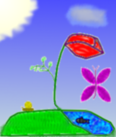

Hi there!

I often draw
this on tests,
and that drives
teachers angry
I am Teo Samaržija
pronunciation
from Croatia, born in 1999.I often draw
this on tests,
and that drives
teachers angry
I am known on various Internet forums as FlatAssembler.
I am interested in informatics and linguistics (specifically the names of places in Croatia; If you are familiar with the topic, you may be interested in reading a paper which summarizes my hypotheses about the names of places in Croatia and the corresponding presentation, or watching my YouTube video (MP4)), and have created a programming language called AEC (you may also be interested in reading my paper about making a web-based emulator of the PicoBlaze computer). I also like fighting pseudosciences, and Internet is full of them. I have many times been made to believe them by being bombarded with controversial statements I didn't know how to evaluate. So, I'd like to help others in the same position. Government-backed-up pseudosciences (pseudopsychology suggesting my father was a rapist and that I was a witness) also put my mother and almost my father into jail. You can read excerpts from a long letter I wrote to my mother while she was in jail.
On this website, I'll publish the HTML5 stuff I've made (applications and games for websites), and I will also link to the forum topics I've started which I'd like to be discussed further.
And, I'll also be selling my house here.
The beliefs that define me as a person are perhaps libertarianism (the belief that human free will produces the best results when not affected by laws), vegetarianism (abstinence from eating meat of birds and mammals) and digital physics (belief that the universe is a giant computer).
I am living in a country that has been horribly traumatized by the recent war: by the deaths of many young people and by the experience of the darker side of being a human being (the only animal that wages wars). My favourite song is Eric Bogle's The Green Fields of France (if your browser can't play MP4 videos on YouTube, you can download the MP4 here and open it in VLC). Eric Bogle's The Gift Of Years (MP4) is slightly less touching, but it's way easier to poetically translate into Croatian. Yet another beautiful Eric Bogle's song is All the Fine Young Men (MP4). Another one of my favourite anti-war songs is The Sun is Burning (MP4) by Ian Campbell, describing a situation in which nuclear weapons are fired accidentally (probably the greatest threat to human race today). My favourite Croatian song is Gore si ti (MP4, I have also started a Reddit thread about it), written by Petar Grašo and sung by Oliver Dragojević. Another great song sung by Oliver Dragojević, which is easier to translate into English, is Moj Galebe (MP4), written by Zdenko Runjić. My favourite Croatian anti-war song is Udica by Gibonni, but it is unfortunately so hard to translate that I will not even attempt to do that (The basic diea is: The line of a fishhook (udica) injures human fingers, so the human says "Thank God I was not born as a fish.". Then the song then describes a ship that was carrying an army but which sank and the army died in it, presumably in World War 2. At the end, the song says that the sea says "Thank God I was not born as a human being.".). One of my favorite songs in the Serbo-Croatian language is E Moj Plavi (MP4), a political song by Đorđe Balašević (UPDATE: I received a message from somebody claiming to be Đorđe Balašević about how my translation is offensive and asking me to delete all copies of it as soon as possible, or else he is going to make a lawsuit against me. While I find it just as believable it wasn't real Đorđe Balašević, but somebody who tries to shut him up, the risk of getting into such lawsuits is rather high. If it is him, then it's rather sad that the singer-songwriter who sings anti-police songs will sue somebody for offensive speech, because it shows he doesn't actually believe what he preaches. (UPDATE: Anyway, rest in peace, Đorđe Balašević! It was not my slightest intention to offend you with my (mis-)translation of your anti-police song.)). I think this was more than enough to show what culture I enjoy.
Previously, this site was hosted here, but I got banned from 000webhost for hate speech. I don't think anything I posted there objectively qualifies as hate speech (yet alone my whole site), so I'll host it somewhere else.
UPDATE on 01/12/2021: I am suffering from mental health issues (a psychotic disorder), which is why I have not been active neither on this blog nor on the forums for quite some time (my hands have usually been shaking too much for me to type longer sentences on a computer, and I could not concentrate on doing that either). If you are going to contact me, please try not to disturb me.